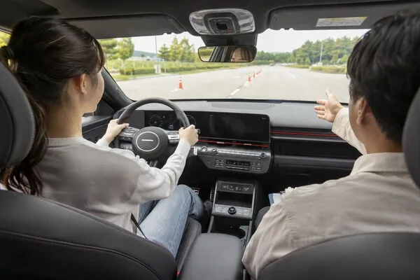

▲ 용인 운전면허시험장 실기 시험장. 독학 취득의 출발점이자, 재시험이 쌓이는 곳이기도 하다
학원 결제액을 보면 누구나 같은 검색을 합니다. "시험장에 직접 가면 반값"이라는 말입니다.
틀린 말은 아닙니다. 다만 한 번에 붙는다는 전제가 빠져 있습니다. 독학의 진짜 가격은 접수창구에서 낸 돈이 아니라 연습차량과 재시험 횟수에서 결정됩니다.
1. 공식 수수료는 확실히 쌉니다
한국도로교통공단 안전운전 통합민원 기준으로 1·2종 보통 신규 응시자가 시험장에서 내는 비용은 이렇습니다.
| 항목 | 금액 |
|---|---|
| 신체검사 | 7,000원 |
| 학과시험 | 10,000원 |
| 장내기능시험 | 25,000원 |
| 연습면허 발급 | 별도 |
| 도로주행시험 | 별도 |
| 면허증 발급 | 별도 |
일반 면허증을 선택하고 각 시험을 한 번에 통과하면 행정 수수료 자체는 학원비보다 훨씬 작습니다. 여기까지는 "반값"이라는 말이 성립합니다.
▲ 접수 수수료만 더하면 확실히 싸다. 문제는 그 목록에 빠진 항목들이다 ⓒ 오토트리뷴 생성 이미지
2. 빠져 있는 항목들
그러나 이 숫자를 "면허 취득 총액"으로 부르면 계산이 틀어집니다.
사진비, 교통비, 연습면허 보험, 차량 대여와 동승자 섭외 비용이 빠져 있기 때문입니다. 특히 도로주행 연습은 면허 요건을 갖춘 동승자가 필요하고, 임의로 혼자 연습해서는 안 됩니다.
| 항목 | 성격 |
|---|---|
| 사진비·교통비 | 소액이지만 방문 횟수만큼 반복 |
| 연습면허 보험 | 연습 차량 운행에 필요 |
| 차량 대여 | 연습 환경이 없으면 필수 |
| 동승자 | 도로주행 연습의 법적 요건 |
| 시간 | 반차·휴가 등 기회비용 |
3. 재시험이 계산을 뒤집습니다
기능과 도로주행은 불합격할 때마다 다시 수수료와 이동시간이 듭니다. 그리고 기능시험은 불합격일로부터 3일이 지나야 재응시할 수 있어 일정도 밀립니다.
직장인이 반차를 내거나 시험장이 먼 지역에 산다면 현금으로 보이지 않는 비용이 커집니다. 독학이 싸다는 공식은 연습 환경이 이미 있는 사람에게 가장 잘 맞습니다.
▲ 기능시험은 불합격 시 3일이 지나야 재응시할 수 있다. 일정이 밀리는 구조다 ⓒ 오토트리뷴 생성 이미지
📍 학원비에 묶여 있는 것
전문학원 비용에는 법정 교육시간, 교육용 차량, 강사, 자체시험 운영비와 보험이 함께 묶입니다.
그래서 독학 비용과 접수비만 비교하면 차이가 과장됩니다. 학원이 파는 것은 합격 보장이 아니라 연습차량과 일정, 피드백입니다.
4. 독학이 유리한 사람
조건이 맞으면 독학은 확실히 저렴합니다. 가족 차량을 합법적으로 활용할 수 있고, 평일 시험 일정에 유연하게 대응하며, 운전 감각이 빠른 사람이라면 직접 응시의 장점이 큽니다.
학과시험은 공개 문제은행을 반복해 준비하고, 기능시험은 공식 채점기준과 코스도를 먼저 익히면 불필요한 재시험을 줄일 수 있습니다.
| 조건 | 내용 |
|---|---|
| 1 | 각 시험을 적은 횟수 안에 통과할 준비 |
| 2 | 합법적인 도로연습 차량과 동승자 |
| 3 | 시험장 방문 시간을 감당할 여유 |
셋 중 하나라도 없으면 학원과의 격차가 빠르게 줄어듭니다.
5. 절충안이 가장 현실적입니다
가장 현실적인 방법은 섞는 것입니다. 학과는 스스로 준비하고, 기능이나 도로주행에서 부족한 부분만 시간제 연수를 받는 방식입니다.
다만 무등록 교습이나 보험이 불명확한 차량은 가격이 싸도 피해야 합니다. 사고가 나면 절약액보다 훨씬 큰 비용이 생깁니다.
연습이 부족한 부분도 나눠서 봐야 합니다. 기능코스 조작이 문제인지, 실제 도로에서 차로 유지와 상황판단이 문제인지에 따라 필요한 교육이 다릅니다.

▲ 도로주행 연습에는 면허 요건을 갖춘 동승자가 반드시 필요하다 ⓒ 오토트리뷴 생성 이미지
6. 결제 전에 세 줄만 적으면
계산 방식을 바꾸면 선택이 쉬워집니다. "최저비용"이 아니라 "내 예상 실패 횟수"를 넣어 계산하는 것입니다.
| 항목 | 넣을 것 |
|---|---|
| 직접 응시안 | 공식 수수료 + 사진·교통비 + 연습차량 비용 + 예상 재시험 2회 |
| 학원안 | 등록 총액 + 추가교육 단가 + 재시험료 + 이동시간 |
| 마감 기한 | 면허를 꼭 따야 하는 날짜 |
금액이 조금 싸도 취업 예정일을 넘기면 그 선택은 실질적으로 비쌉니다. 최저가 광고보다 "추가 1시간과 재시험 1회의 가격"을 묻는 것이 실제 총액을 보여줍니다.
독학의 핵심은 무조건 아끼는 것이 아닙니다. 돈이 새는 구간을 미리 아는 데 있습니다.